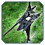

О патче
Все меняется!
Всем привет! Это наш ГАФ баланс. Все внесенные изменения могут быть изменены повторно.
Дисклеймер: Внесенные здесь изменения могут быть нарушены или иметь непредвиденные побочные эффекты. Если вы с чем-то столкнетесь, пожалуйста, сообщите об этом в отдел баланса на
сайте. Игровые баги репортить сюда
(канал на сервере GAF Discord).
Все изменения, которые в настоящее время внесены в GAF, позволяют нам оценить новый баланс в реальных играх.
Баланс-команда: Isakentyi, SupremeKiska и Gary_Goodspeed
Баланс патч 1.2 «Cybran tears»
На этот раз мы переделали T3 ленд-юниты и крейсеры, исправили ховеры и еще пару мелочей. Мы долгое время наблюдали, как на миду перестреливались Персивали и Кирпичи. Остальные T3 юниты
просто погибали моментально от входящего урона. В этом балансе мы попытались это исправить, вернув в сетап снайперов. Понерфили Кирпичей, апнули Тапки и Пузыри. Также переделали T3
мобильную арту. Читайте ниже список изменений!
Ленд
 Мангуст
Мангуст
Мангуст апнут и стал дороже. Теперь он должен справляться со своей задачей.
-
Изменения
- Дальность атаки пулемета:
34 37
- Количество снарядов пулемета:
20 25
- Урон пулемета:
15 17
- Скорострельность пулемета:
10/70 10/65
- Дальность атаки гранатомета:
34 37
- Урон гранат:
55 100
- Сплеш гранат:
3 4
- Скорострельность гранатомета:
10/66 10/75
- Скорость передвижения:
2.9 3
- Цена по массе:
200 250
- Цена по энергии:
1000 1250
 Вагнер
Вагнер
Снова жалуются на Вагнера. Теперь он не такой быстрый, как остальные ховер-танки.
-
Изменения
- Скорость передвижения:
3.7 4
 Пламя
Пламя
Эонский ховер стал имбой, режем скорость передвижения.
-
Изменения
- Скорость передвижения:
4.8 4.3
 Яшавох
Яшавох
Скорость стала запредельной, потные мужики обузят и булят других потных мужиков. Нерфим.
-
Изменения
- Скорость передвижения:
5 4.5
Кирпич
Снова, кибранофилы, апают свою любимую расу. В ФАФ балансе, Кирпич, быстрый, дальнобойный, скорострельный, жирный юнит, который тяжело остановить, а если в сетапе есть мобильное стелс
поле, то, гг всему. Мы нерфим Кирпича, не сильно, но он заметно ослаблен.
Отняли дальность стрельбы, сделали медленнее.
-
Изменения
- Дальность атаки всех орудий:
34 32
- Максимальная скорость вперед/назад:
2.4 2.2
- Максимальное ускорение/торможение:
2.4 2.3
 Стервятник (Пузырек/Харба)
Стервятник (Пузырек/Харба)
Пузырька апнули. Он является чем-то между Титанами и Персивалями. Не такой быстрый, как Титан, не такой жирный, как Персиваль.
-
Изменения
- Урон:
160 180
- Скорость передвижения/торможения/ускорения:
2.95 3.2
- Дальность атаки:
27 29
- Реген щита:
30 35
- Перезарядка щита:
30 25
 Оотум (Тапочек)
Оотум (Тапочек)
Тапок был ни туда, ни сюда, далеко не стреляет и не жирный. Мы дали ему немного ХП и рейндж атаки.
-
Изменения
- ХП:
4700 5000
- Макс ХП:
4700 5000
- Дальность атаки мейн-пушки:
28 30
- Сплеш мейн-пушки:
1.3 1.5
- Дальность атаки доп-пушек:
22 24
- Урон доп-пушек:
64 65
 Фантом
Фантом
Снайпер-боты были уничтожены в угоду кибранскому налому Кирпичами. Мы посмотрели, какими они были прежде, и сделали что-то между тем, что было и тем, что стало, чтобы игроки не обузили
снайперов.
-
Изменения
- Время производства (в сек):
55 44
- Стоимость по энергии:
25000 13000
- Дальность стрельбы:
60 70
- Скорость снаряда:
90 120
- Скорость передвижения:
2.4 2.8
 Уша-ах
Вернули имбу, которая шотает зазевавшихся комов на миду.
-
Изменения
- Время производства (в сек):
60 47
- Стоимость по энергии:
27000 14000
- Дальность стрельбы:
55 65
- Дальность стрельбы в снайпер-моде:
65 75
- Скорость снаряда:
80 100
- Скорость передвижения:
2.2 2.6
Разрушитель
Апнули и сделали дороже T3 мобильную арту. Сделали их маневреннее, потому что пока они разложатся, пока наведутся, их убьют. Теперь это юнит для выбивания "бункеров мечты" нубских
мидеров.
-
Изменения
- Стоимость по массе:
800 1050
- Время развертывания:
1 1.3
- Урон:
750 950
- Дальность атаки:
90 105
- Скорость передвижения:
2.2 2.4
Требушет
-
Изменения
- Стоимость по массе:
800 1050
- Время развертывания:
0.8 1.1
- Урон:
450 650
- Дальность атаки:
90 105
- Скорость передвижения:
2.2 2.4
Спокойствие
Эонская арта может стрелять на ходу, поэтому у нее скорость передвижения меньше, чем у остальных.
-
Изменения
- Стоимость по массе:
800 1050
- Урон:
1350 1500
- Дальность атаки:
90 105
- Скорость передвижения:
2.2 2.3
 Сутанус
Сутанус
-
Изменения
- Стоимость по массе:
800 1050
- Время развертывания:
0.44 0.8
- Урон:
700 900
- Дальность атаки:
90 105
- Скорость передвижения:
2.2 2.4
 Уашавох
Уашавох Ветер
Ветер